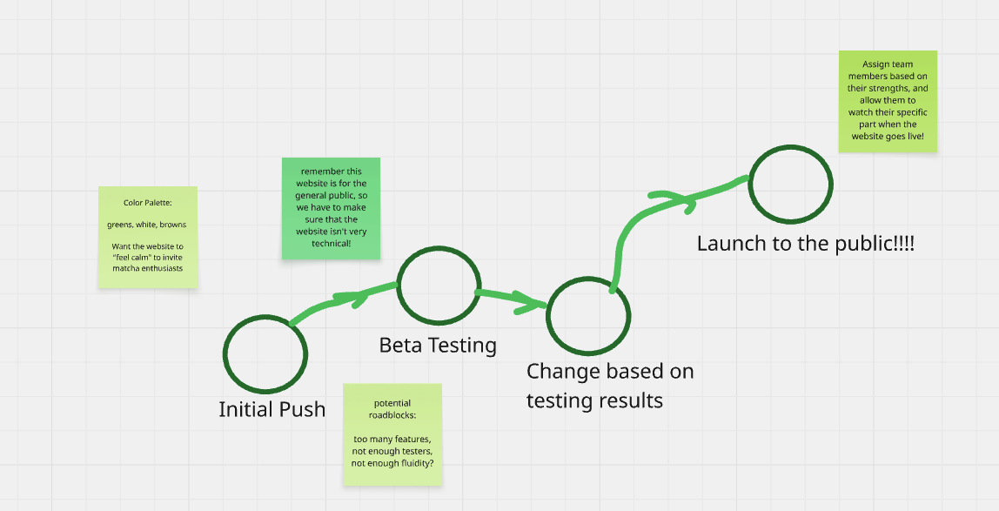
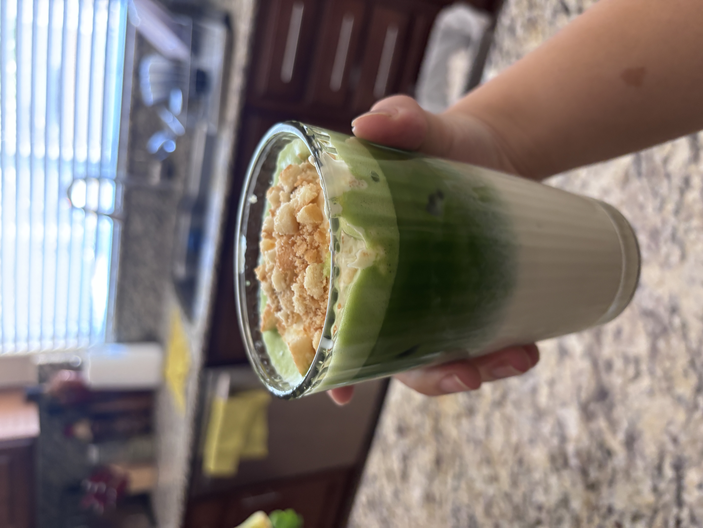
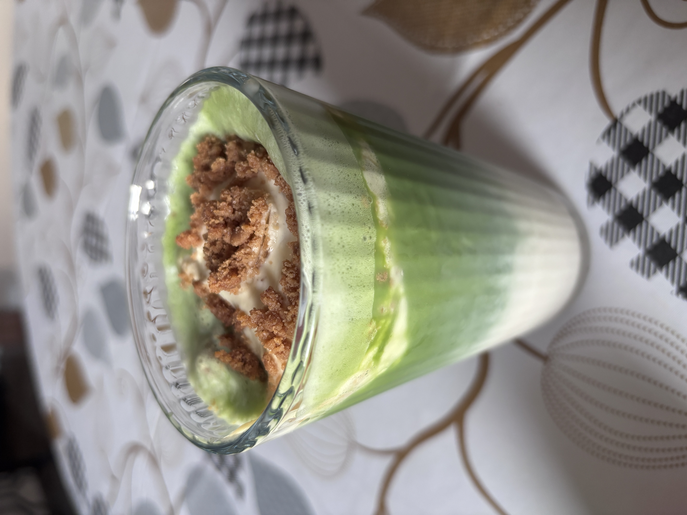

Matcha Website Dev Meeting 1
This meeting is about the potential matcha website that'll launch to help everyone interested in matcha, regardless of their experience levels and knowledge.
The date of this meeting will be on April 1st, 2026.
This meeting is about the potential matcha website that'll launch to help everyone interested in matcha, regardless of their experience levels and knowledge.
The date of this meeting will be on April 1st, 2026.
Here are the audio recordings from the meeting:
This isn't an actual audio recording, it's just a song!
Make a website that'll give the best matcha powder recommendations, best ratios, and more.
This website should be a landing hub for all things matcha!
Input your name here to be marked for attendance!
Things we didn't cover last time
New things that'll be covered
Details from today's meeting!

I recently went to the beach and really enjoyed the scenery. It's very calming and I would like to see the color palette be similar to this video:
As someone who is very interested in the matcha making process, I like to experiment with different flavors. My favorite was a banana pudding matcha latte -- Maybe we can incorperate a section that finds the best flavor combos based on your preferences?
Thinking about the future of our matcha website, I envision more social media influence, and we can make TikTok's to promote it! We can also show how to make drinks, like the ones I made below:

Banana Pudding Matcha

Biscoff Pudding Matcha!